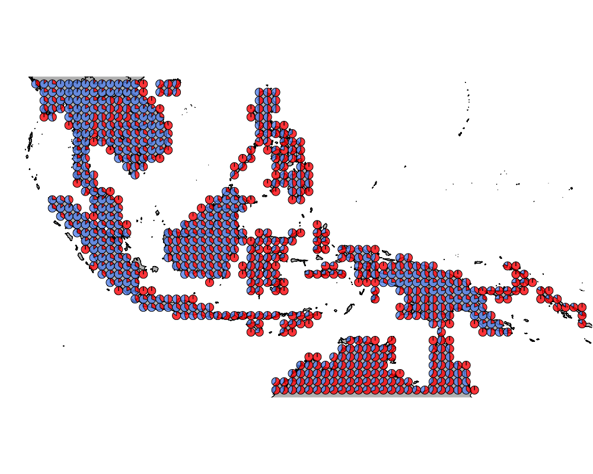
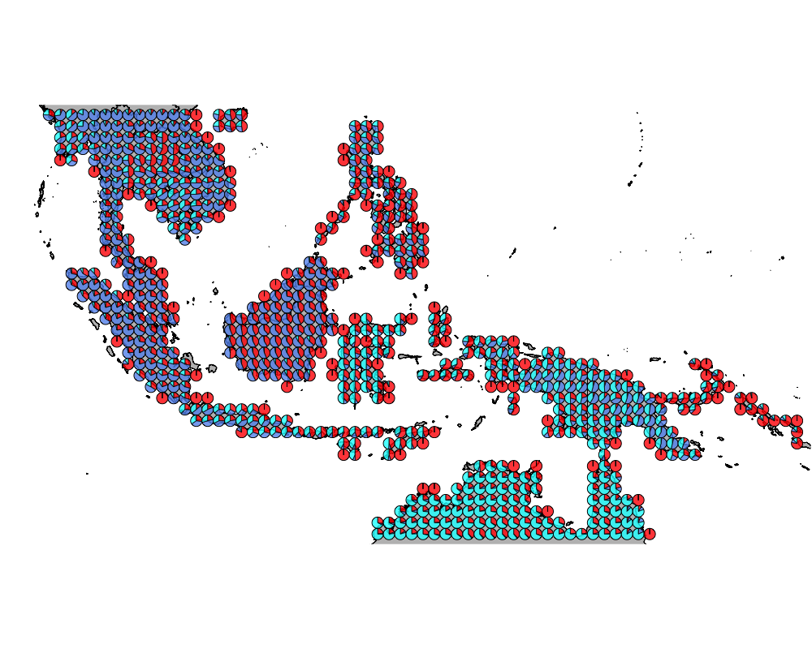
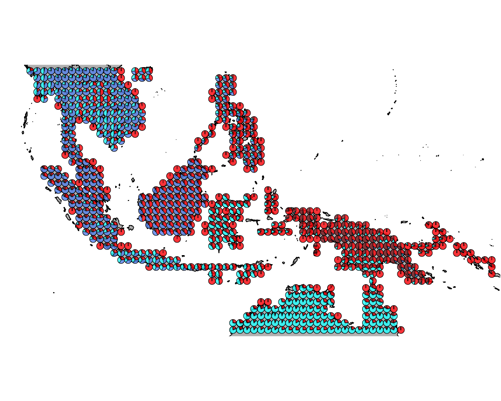
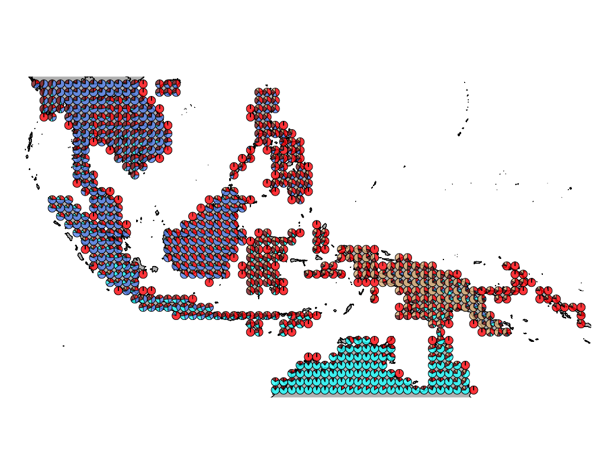
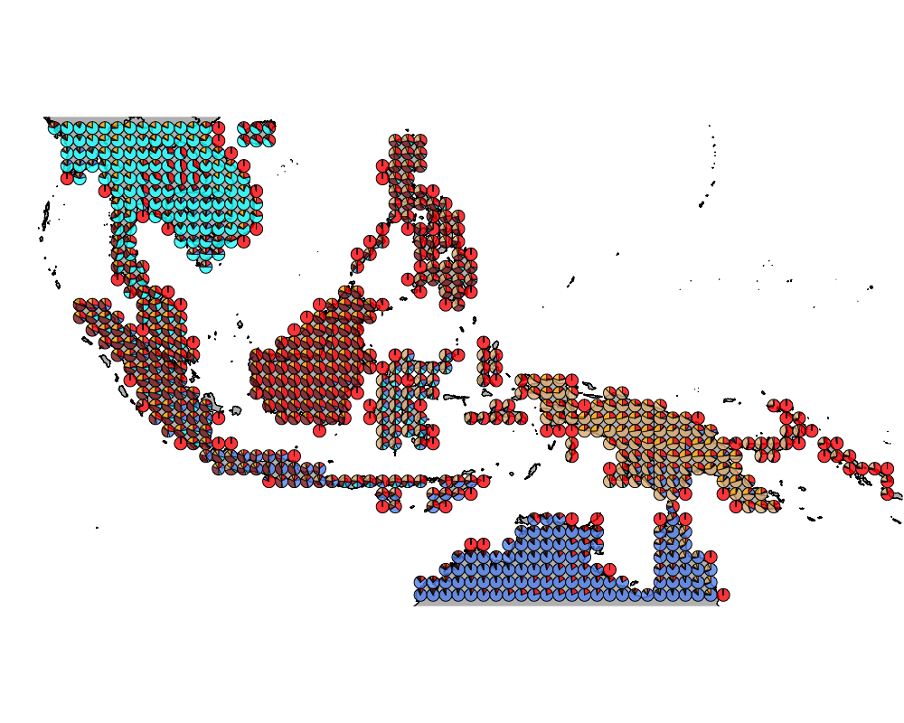
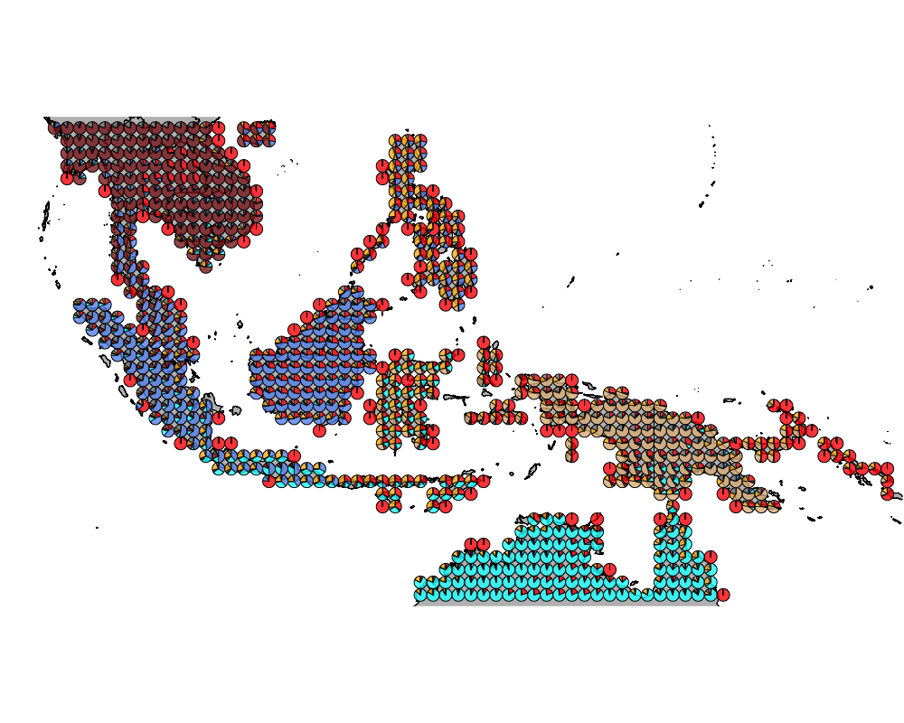
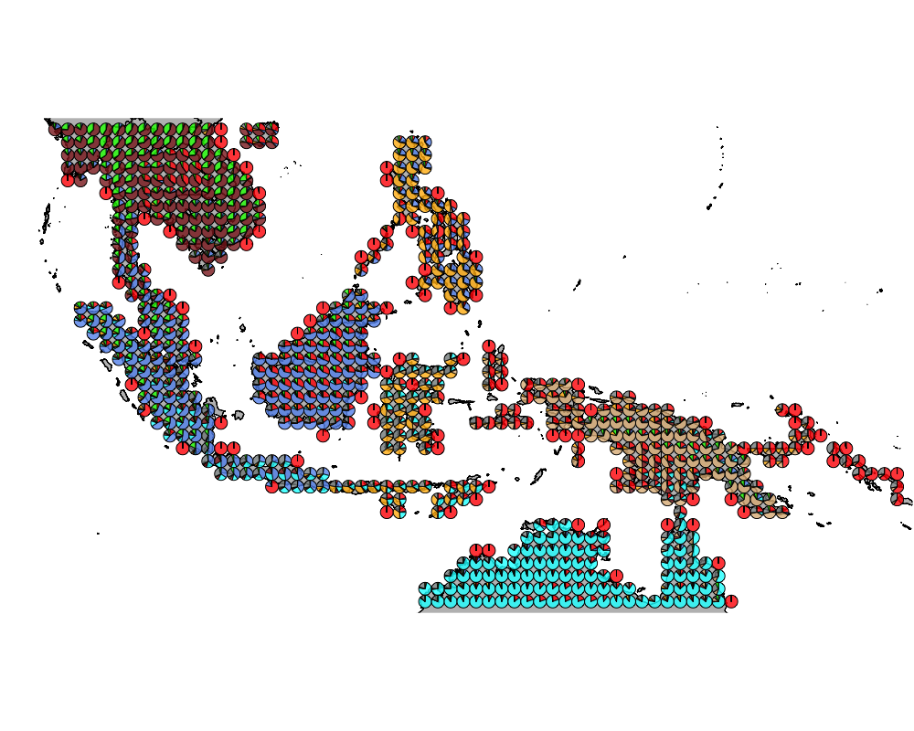
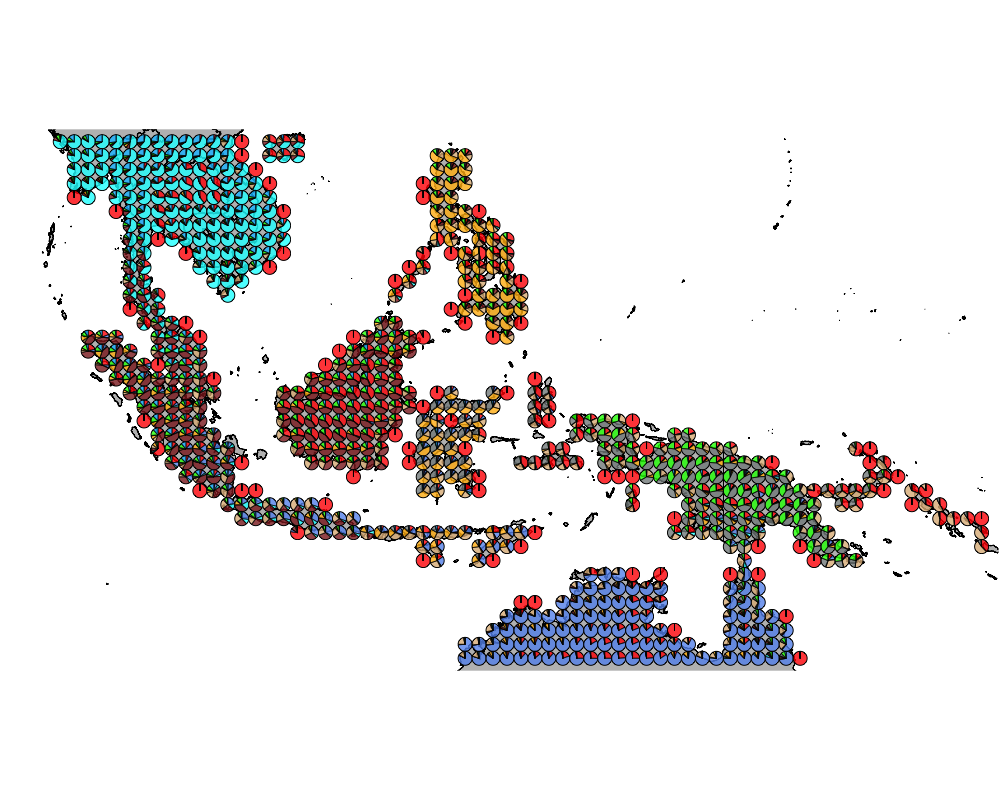
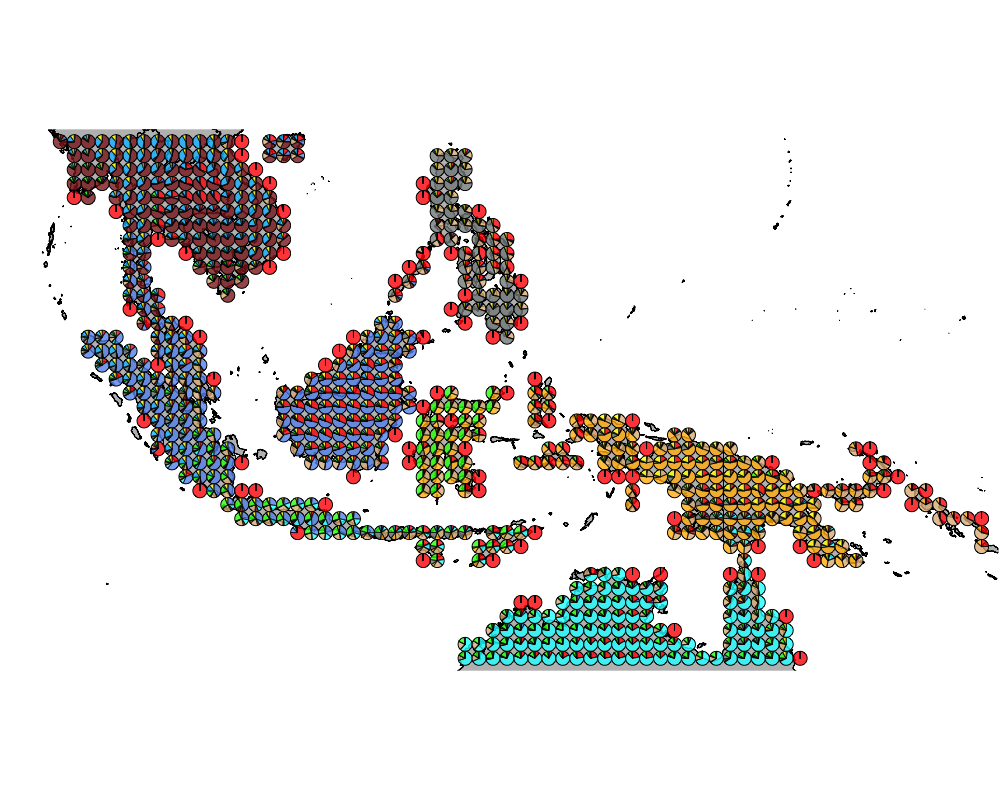

Wallace analysis with functional grouping of bird species
Kushal K Dey
4/11/2018
Packages
library(methClust)
library(CountClust)
library(rasterVis)
library(gtools)
library(sp)
library(rgdal)
library(ggplot2)
library(maps)
library(mapdata)
library(mapplots)
library(scales)
library(ggthemes)
library(ape)
library(phytools)Extracting Functional group data
functional_groups <- read.csv("../data/bird_FG_apr18.csv", header = TRUE, stringsAsFactors = FALSE)
functional_names <- as.character(functional_groups[,1])datalist <- get(load("../data/wallace_region_pres_ab_breeding_with_seabirds.rda"))
latlong <- datalist$loc
data <- datalist$dat
if(nrow(latlong) != nrow(data)) stop("dimensions matching error")The number of common birds that match between the functional data and the taxonomic data are as follows
length(which(!is.na(match(functional_names, colnames(data)))))## [1] 2033common_birds <- intersect(colnames(data), functional_names)
functional_groups_2 <- functional_groups[match(common_birds, functional_names),]
data2 <- data[, match(common_birds, colnames(data))]unique_functional_groups <- unique(functional_groups_2[,4])meth <- matrix(0, dim(data2)[1], length(unique_functional_groups))
unmeth <- matrix(0, dim(data2)[1], length(unique_functional_groups))for(num in 1:length(unique_functional_groups)){
idx <- which(functional_groups_2[,4] == unique_functional_groups[num])
if(length(idx) > 1){
tmp <- data2[, idx]
meth[,num] <- apply(tmp, 1, sum)
unmeth[,num] <- apply(1-tmp, 1, sum)
}else{
meth[,num] <- data2[,idx]
unmeth[,num] <- 1 - data2[,idx]
}
}
colnames(meth) <- unique_functional_groups
colnames(unmeth) <- unique_functional_groupsMap of Wallacea
world_map <- map_data("world")
world_map <- world_map[world_map$region != "Antarctica",] # intercourse antarctica
world_map <- world_map[world_map$long > 90 & world_map$long < 160, ]
world_map <- world_map[world_map$lat > -18 & world_map$lat < 20, ]
p <- ggplot() + coord_fixed() +
xlab("") + ylab("")
#Add map to base plot
base_world_messy <- p + geom_polygon(data=world_map, aes(x=long, y=lat, group=group), colour="light green", fill="light green")
cleanup <-
theme(panel.grid.major = element_blank(), panel.grid.minor = element_blank(),
panel.background = element_rect(fill = 'white', colour = 'white'),
axis.line = element_line(colour = "white"), legend.position="none",
axis.ticks=element_blank(), axis.text.x=element_blank(),
axis.text.y=element_blank())
base_world <- base_world_messy + cleanup
base_world
Ecostructure
Apply Binomial ecostructure model on the functional data.
topics_clust <- list()
topics_clust[[1]] <- NULL
for(k in 2:10){
topics_clust[[k]] <- meth_topics(meth, unmeth,
K=k, tol = 0.1, use_squarem = FALSE)
}
save(topics_clust, file = "../output/methClust_wallacea_functional.rda")Visualization
topics_clust <- get(load("../output/methClust_wallacea_functional.rda"))color = c("red", "cornflowerblue", "cyan", "brown4", "burlywood", "darkgoldenrod1",
"azure4", "green","deepskyblue","yellow", "azure1")
intensity <- 0.8
for(k in 2:10){
png(filename=paste0("../docs/Wallacea_functional/geostructure_birds_", k, ".png"),width = 1000, height = 800)
map("worldHires",
ylim=c(-18,20), xlim=c(90,160), # Re-defines the latitude and longitude range
col = "gray", fill=TRUE, mar=c(0.1,0.1,0.1,0.1))
lapply(1:dim(topics_clust[[k]]$omega)[1], function(r)
add.pie(z=as.integer(100*topics_clust[[k]]$omega[r,]),
x=latlong[r,1], y=latlong[r,2], labels=c("","",""),
radius = 0.5,
col=c(alpha(color[1],intensity),alpha(color[2],intensity),
alpha(color[3], intensity), alpha(color[4], intensity),
alpha(color[5], intensity), alpha(color[6], intensity),
alpha(color[7], intensity), alpha(color[8], intensity),
alpha(color[9], intensity), alpha(color[10], intensity),
alpha(color[11], intensity))));
dev.off()
}The geostructure plot for different K.
K = 2

geostructure2
K = 3

geostructure3
K = 4

geostructure4
K = 5

geostructure5
K = 6

geostructure6
K = 7

geostructure7
K = 8

geostructure8
K = 9

geostructure9
K = 10

geostructure10
Important functional categories
We obtain the driving bird species for each cluster using the CountClust package.
K =2
driving_cat_ind <- ExtractTopFeatures(topics_clust[[2]]$freq, method = "poisson", options = "min", top_features = 10)
func_cat_names <- apply(driving_cat_ind$indices, c(1,2), function(x) return (colnames(meth)[x]))
t(func_cat_names)## [,1] [,2]
## [1,] "103" "40"
## [2,] "63" "12"
## [3,] "110" "6"
## [4,] "88" "86"
## [5,] "2" "118"
## [6,] "80" "5"
## [7,] "120" "107"
## [8,] "29" "116"
## [9,] "96" "7"
## [10,] "62" "75"K =3
driving_cat_ind <- ExtractTopFeatures(topics_clust[[3]]$freq, method = "poisson", options = "min", top_features = 5)
func_cat_names <- apply(driving_cat_ind$indices, c(1,2), function(x) return (colnames(meth)[x]))
t(func_cat_names)## [,1] [,2] [,3]
## [1,] "110" "12" "103"
## [2,] "29" "40" "26"
## [3,] "2" "86" "80"
## [4,] NA "6" "88"
## [5,] NA "30" "62"K =5
driving_cat_ind <- ExtractTopFeatures(topics_clust[[5]]$freq, method = "poisson", options = "min", top_features = 5)
func_cat_names <- apply(driving_cat_ind$indices, c(1,2), function(x) return (colnames(meth)[x]))
t(func_cat_names)## [,1] [,2] [,3] [,4] [,5]
## [1,] "2" "12" "103" "63" "80"
## [2,] "110" "86" "88" "118" "51"
## [3,] "29" "40" "120" "96" "26"
## [4,] NA "54" "71" "84" "87"
## [5,] NA "30" "67" "102" "17"SessionInfo
sessionInfo()## R version 3.4.4 (2018-03-15)
## Platform: x86_64-apple-darwin15.6.0 (64-bit)
## Running under: macOS Sierra 10.12.6
##
## Matrix products: default
## BLAS: /Library/Frameworks/R.framework/Versions/3.4/Resources/lib/libRblas.0.dylib
## LAPACK: /Library/Frameworks/R.framework/Versions/3.4/Resources/lib/libRlapack.dylib
##
## locale:
## [1] en_US.UTF-8/en_US.UTF-8/en_US.UTF-8/C/en_US.UTF-8/en_US.UTF-8
##
## attached base packages:
## [1] stats graphics grDevices utils datasets methods base
##
## other attached packages:
## [1] phytools_0.6-44 ape_5.0 ggthemes_3.4.0
## [4] scales_0.5.0.9000 mapplots_1.5 mapdata_2.2-6
## [7] maps_3.2.0 rgdal_1.2-16 gtools_3.5.0
## [10] rasterVis_0.41 latticeExtra_0.6-28 RColorBrewer_1.1-2
## [13] lattice_0.20-35 raster_2.6-7 sp_1.2-7
## [16] CountClust_1.5.1 ggplot2_2.2.1 methClust_0.1.0
##
## loaded via a namespace (and not attached):
## [1] viridisLite_0.3.0 splines_3.4.4
## [3] assertthat_0.2.0 expm_0.999-2
## [5] stats4_3.4.4 animation_2.5
## [7] yaml_2.1.18 slam_0.1-42
## [9] numDeriv_2016.8-1 pillar_1.1.0
## [11] backports_1.1.2 quadprog_1.5-5
## [13] limma_3.34.9 phangorn_2.3.1
## [15] digest_0.6.15 colorspace_1.3-2
## [17] picante_1.6-2 cowplot_0.9.2
## [19] htmltools_0.3.6 Matrix_1.2-12
## [21] plyr_1.8.4 pkgconfig_2.0.1
## [23] mvtnorm_1.0-6 combinat_0.0-8
## [25] tibble_1.4.2 mgcv_1.8-23
## [27] nnet_7.3-12 hexbin_1.27.1
## [29] lazyeval_0.2.1 mnormt_1.5-5
## [31] survival_2.41-3 magrittr_1.5
## [33] evaluate_0.10.1 msm_1.6.5
## [35] nlme_3.1-131.1 MASS_7.3-47
## [37] vegan_2.4-4 tools_3.4.4
## [39] stringr_1.3.0 munsell_0.4.3
## [41] plotrix_3.7 cluster_2.0.6
## [43] compiler_3.4.4 clusterGeneration_1.3.4
## [45] rlang_0.2.0 grid_3.4.4
## [47] igraph_1.1.2 labeling_0.3
## [49] rmarkdown_1.9 boot_1.3-20
## [51] gtable_0.2.0 flexmix_2.3-14
## [53] reshape2_1.4.3 zoo_1.8-0
## [55] knitr_1.20 fastmatch_1.1-0
## [57] rprojroot_1.3-2 maptpx_1.9-4
## [59] permute_0.9-4 modeltools_0.2-21
## [61] stringi_1.1.6 parallel_3.4.4
## [63] SQUAREM_2017.10-1 Rcpp_0.12.16
## [65] coda_0.19-1 scatterplot3d_0.3-40This R Markdown site was created with workflowr